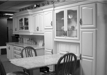
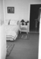
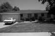
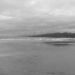
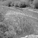
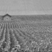

Project 4 / Scene Recognition with Bag of Words

Example of a right floating element.
This project focus on achieving scene recognition with bag of words. The main technique can be splited into feature representation and classification. In all, there are 15 known categories of test images (100 in each group), and another 1500 images are to be recognized. For feature representation, tiny_image, sift classification and Fisher encoding are applied; while for feature classification, K-nearest neighbor, suport vector machine and Naive Bayes Nearest Neighbor are used. Within these,Deep Learning, Fisher encoding, NBNN (Naive Bayes Nearest Neighbr) are in extra credit.
Hence different combination od methods, choice of parameters result in different accuracy. Tiny image and K nearest neighbor can anly make around 20% when Fisher encode combine with SVM can make over 64%. The implement details and results will be stated as follow.
- Tiny Image and K-Nearest Neighbor
- Bag of SIFT and K-nearest neighbor
- Bag of SIFT and Support Vector Machine
- plain SIFT and Naive Bayes Nearest Neighbor
- Fisher encode
- Deep learning
Part 1 Tiny Image and K-Nearest Neighbor
Tiny Image is one of the simplest image representation. In this part, image is resized into 16*16 resolution with zero means and unit length. And K- Nearest Neighbor is to find the K smallest distance of feature vectors ( one vector for each image, different from NBNN) and decide the classification by the vote of those K-neighbors. Part of code is as follow:
...
for i=1:1:Num
image = im2double(imread(image_paths{i}));
image_shrink = imresize(image,[feature_width, feature_width]);
%% normalization
raw=reshape(image_shrink,1,[]); %% should we use im2double here?
mean=(sum(raw))/(feature_width^2);
raw=raw-mean;
raw=raw./(sum(raw.^2));
image_feats(i,:)=raw; %% with negative values
end
...
As for choice of parameters, the primary parameter is the number K and threshold is used in order to discard the obviously lay out neighbors.
By trying different values, the increase of K does not necessarily increase the accuracy. In following results, K = 10, thresholdh =1.0. The resulting accuracy is 26.1%. (The range of the 'farthest K th neighbor is also shown').
Part 2 Bag of SIFT and nearest neighbor
Different from tiny image. Bag of SIFT can be regarded as a encoding or a voting of based on multiple SIFT features of a image. By clustering SIFT into clusters, the vote from each cluster forge the feature ( one to one ) for the image. 'build_vocaburary' samples the SIFT features from train image and set up basis for histogram. 'get bag of sifts' calculate histogram for both test and train image. Some details can be seen as follow:
for i=1:1:Num
...
[~, SIFT_features] = vl_dsift(image, 'norm','step',stepsize);
D = vl_alldist2(single(SIFT_features),vocab');
...
for j=1:1:sizeofSIFT
temp=D(j,:);
[line,ind]=sort(temp);
line_feat(ind(1))=line_feat(ind(1))+1;
end
raw_feat=line_feat/sum(line_feat);
...
The parameters includes vocab_size (number of clusters), stepsize for sift, framestep( when sample from every image is not necessary). The result is as follow: accuracy = 26.1% , which is higher than combination of tiny image and K-nearest neighbor, but still need to be improved.(accuracy 52.8%, K=5; accuracy 49.5%, K=1 )
Part 3 Bag of SIFT and Support Vector Machine
Here the simplest case of learning is used - linear classifier. The feature of trained image is obtain the hyperplane and test images are categorized based on which side of that hyperplane they fall on. In this project, 15 one.vs.all binary SVM were trained (to tell forest from non-forest etc.) For all the 15 cases, the one that is largest (can be positive or negative) will be taken as the category of test image. Details are as follow:
categories = unique(train_labels);
num_categories = length(categories);
...
[w, b] = vl_svmtrain(train_image_feats', label, LAMBDA(k)); %%weight and offset vector
...
end
%get the distance of test images correspondingly
Distance=zeros(num_categories,L);
for i=1:1:num_categories
distance = (W(:,i)')*(test_image_feats')+B(i);
Distance(i,:)=distance;
end
%get the category for test images
[~,ind]=max(Distance);
for j=1:1:L
pcategory=categories{ind(j)};
predicted_categories{j,1}=pcategory;
end
...
The primary parameter of SVM is the value of lambda, regularizes the linear classifier by encouraging W to be of small magnitude. There is a tendency (but not strict) that accuracy grows as lambda decrease, while the time for calculation increase correspondingly. To make sure the process handled in acceptable time (on current machine) with bettered accuracy, my choice of lambda is often below 0.00001. Results are as follow: (accuracy 60.7% sample per 3 image , diction step 10, step 4, lambda 0.0001; accuracy 61.8% sample per 3 image , diction step 10, step 4, lambda 0.000001; )

|
Also, one thing need to be point out is that: the sample rate and sift step can also greatly influence the performance of Bag of SIFT + SVM, as follow: (accuracy 59.7%, sample per 3 image, diction step 10, step 10 , lambda 0.000001; accuracy 45.5%, sample per 1 image, diction step 30, step 4 , lambda 0.00001;)
Part 4 plain SIFT and Naive Bayes Nearest Neighbor
In the paper 'Indefense of Nearest Neighbor Based Image Classification' explained the reason why origin nearest neighbor seem inferior to the training classifiers ( discriminative information is always reduced due to rough quantization). When origin Nearest Neighbor deal with image-to-image distance, the Naive Bayes Method deals with Image-to-Class distance. The batch of sift feature obtained from image is not used for histogram or other encoding techniques, but are used directly for distance measurement. The process are as follow:
[train_image_feats, train] = sifts_for_every_image(train_image_path, flabel);
[test_image_feats, test] = sifts_for_every_image(test_image_path, elabel);
...
for m=1:1:Num
...
for k=1:1:num_categories
ind1= train==k;
C_feats=train_image_feats(ind1,:); % get all dj for one category
DC = vl_alldist2(C_feats',im_feats'); % these features are already single value
[NNC,~]=min(DC);
NNDC(k,:)=NNC;
end
candidate=sum(NNDC,2);
[~,IND]=min(candidate);
pcategory=categories{IND};
predicted_categories{m,1}=pcategory;
...
end
However, the implementation of this method usually make the process largely slowed down, since all the SIFT features from all images need to be used in distance calculation and locate their counter part nearest neighbor in SIFT features of test images. The For loop below can be really slow when step size increases, and if don't use the for loop, the size of matrix will exceed the limit of Matlab.
Hence, my intention here is to notify the improvement of accuracy with compare to origin Nearest Neighbor, to make it run in a acceptable time, I used the step size 30 (which will greatly degenerate the performance as indicated in last part). The result is as follow (accuracy 30.7%, sample per 1 image, diction step 30, step 30 , K-nearest neighbor K=1; accuracy 44.7%, sample per 1 image, diction step 30, step 30 , SVM lambda 0.00001; accuracy 55.8%, sample per 1 image, diction step 30, step 30 , Naive Bayes Nearest Neighbor; )

|
In considering the matrix and running time, I used the step size 30, which could greatly damage the performance, yet the method of NBNN still proved to be comparable with SVM and much better than origin Nearest Neighbor. However, since among the classifications I used, only the SIFT feature can be multiple for one image and experiment on other one-to-one classifiers make no difference from nearest neighbor.
Part 5 Fisher Encode
While get bag of sift is a straight forward histogram 'encoding' of SIFT features, the Fisher has the greater potential to produce more reliable encoding method for batch of sift features. Following is its implement:
for m=1:1:Num
...
[~, train_SIFT] = vl_dsift(trainim, 'norm','step',stepsize);
[~, test_SIFT] = vl_dsift(testim, 'norm','step',stepsize);
train_encoding = vl_fisher(single(train_SIFT), means, covariances, priors,'normalized');
test_encoding = vl_fisher(single(test_SIFT), means, covariances, priors,'normalized');
train_code=[train_code;train_encoding'];
test_code=[test_code;test_encoding'];
...
end
Following result is from combination of Fisher and Nearest Neighbor (K=1): (accuracy 50.6%, sample per 3 image, diction step 4, step 4 , cluster 200, K-nearest neighbor K=1; accuracy 51.8%, sample per 1 image, diction step 4, step 4 , cluster 30, K-nearest neighbor K=1; )
Following result is from combination of Fisher and Nearest Neighbor.
Following result is from combination of Fisher and Support Vector Machine: (accuracy 64.6%, sample per 1 image, diction step 4, step 4 , cluster 30, lambda 0.00001; accuracy 67.1%, sample per 1 image, diction step 4, step 4 , cluster 80, lambda 0.00001; )
|
|
Hence, compare to bag of sift, the Fisher Encoding has better performance. And the number of cluster does not affect the result very much.
Part 6 Deep Learning
By Using the deep learning method and trained model of MatconVet, highly reliable features can be obtained. The implement of Matconvet involves using 'mex' for Xcode in Matlab, I failed several times and used the Citrix connected remote desktop instead. These features are also used in SVM and the implement as well as result are as follow: (accuracy 79.5% combine with nearest neighbor K=5)
...
trainfeat=zeros(1000,1500);
for j=1:1:1500
...
im_ = imresize(im_, net.normalization.imageSize(1:2)) ;
ima = single(ima) - net.normalization.averageImage ;
res = vl_simplenn(net, ima) ;
scores = squeeze(gather(res(end-1).x)) ;
trainfeat(:,j)=scores;
end
...
CS 143 Project 3 results visualization
Accuracy (mean of diagonal of confusion matrix) is 0.795
| Category name | Accuracy | Sample training images | Sample true positives | False positives with true label | False negatives with wrong predicted label | ||||
|---|---|---|---|---|---|---|---|---|---|
| Kitchen | 0.860 |  |
 |  |
 |
 InsideCity |
 Store |
 LivingRoom |
 Office |
| Store | 0.790 |  |
 |
 InsideCity |
 Industrial |
LivingRoom |
 InsideCity |
||
| Bedroom | 0.730 |  |
 |
LivingRoom |
 LivingRoom |
 LivingRoom |
 Office |
||
| LivingRoom | 0.430 |  |
 |
Street |
Store |
 Store |
 Kitchen |
||
| Office | 0.760 |  |
 Store |
 Store |
Kitchen |
Kitchen |
|||
| Industrial | 0.660 | InsideCity |
InsideCity |
 TallBuilding |
 Street |
||||
| Suburb | 0.950 |  | InsideCity |
Forest |
 TallBuilding |
 InsideCity |
|||
| InsideCity | 0.680 |  |
 |
Street |
Suburb |
Street |
Street |
||
| TallBuilding | 0.920 | Industrial |
Industrial |
 Forest |
InsideCity |
||||
| Street | 0.940 |  |
 |
Industrial |
InsideCity |
InsideCity |
Highway |
||
| Highway | 0.940 |  |
 |
 |
Industrial |
 Mountain |
TallBuilding |
 Suburb |
|
| OpenCountry | 0.730 |  |
 |
 Forest |
 Coast |
 Highway |
Coast |
||
| Coast | 0.870 |  |  OpenCountry |
OpenCountry |
 OpenCountry |
OpenCountry |
|||
| Mountain | 0.790 |  |
 Forest |
 Forest |
 Coast |
 Coast |
|||
| Forest | 0.870 |  |
 |  OpenCountry |
 LivingRoom |
Mountain |
OpenCountry |
||
| Category name | Accuracy | Sample training images | Sample true positives | False positives with true label | False negatives with wrong predicted label | ||||
In conclusion, Tiny Image, Bag of SIFT, and Fisher Encoded SIFT, results from Deep Learning are used as image representations, when K-Nearest Neighbor, Support Vector Machine and Naive Bayes Nearest Neighbor are used as classifiers. The best results are from Deep Learning + K_nearest Neighbor which get 79.5%, Fisher encode + SVM which get 67.1%. For extra findings:
- The use of Deep Learning does promote the result a lot, but didn't reach 80% in my case, parameters can be further tuned.
- The nature of Naive Bayes Nearest Neighbor make it either slow or out of Matlab limit when combined with SIFT features. But form the result, when step=30 greatly degraded its performance, NBNN result is better than that of Nearest Neighbor and SVM of the same step level.
- Fisher Encode is better than straight forward histogram of SIFT.
- Also, though not shown in the images, K-nearest Neighbor does not necessarily outperforms Nearest Neighbor (K=1) every time.